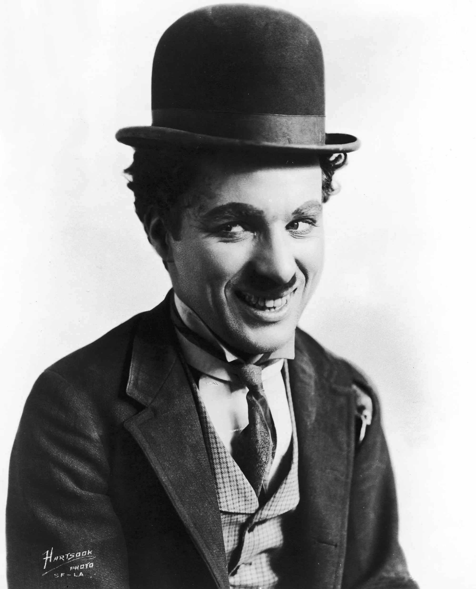

Tribute to Charlie Chaplin

- Sir Charles Spencer Chaplin Jr. KBE (16 April 1889 25 December 1977) was an English comic actor, filmmaker, and composer who rose to fame in the era of silent film.
- Chaplin began performing at an early age, touring music halls and later working as a stage actor and comedian. At 19, he was signed to the Fred Karno company, which took him to the United States. He was scouted for the film industry and began appearing in 1914 for Keystone Studios.
- By 1918, he was one of the world's best-known figures.
- Chaplin received three Academy Awards: an Honorary Award for "versatility and genius in acting, writing, directing, and producing The Circus" in 1929